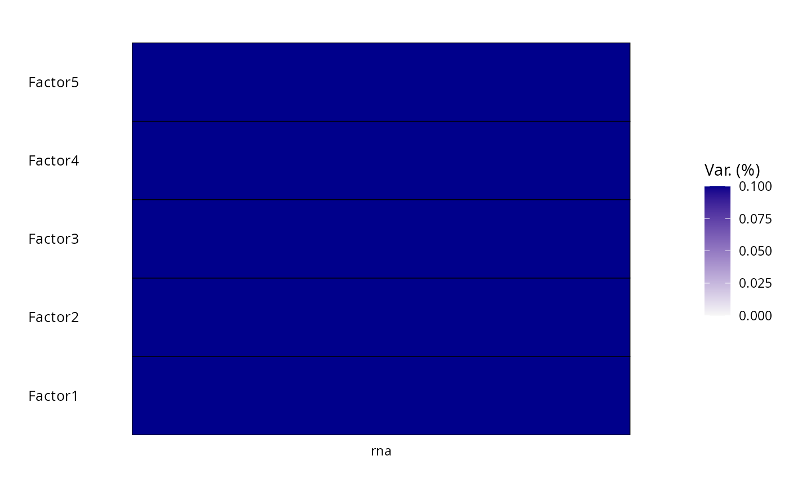
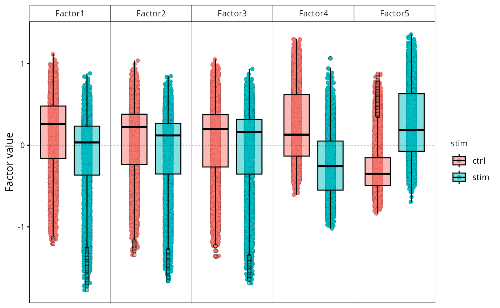
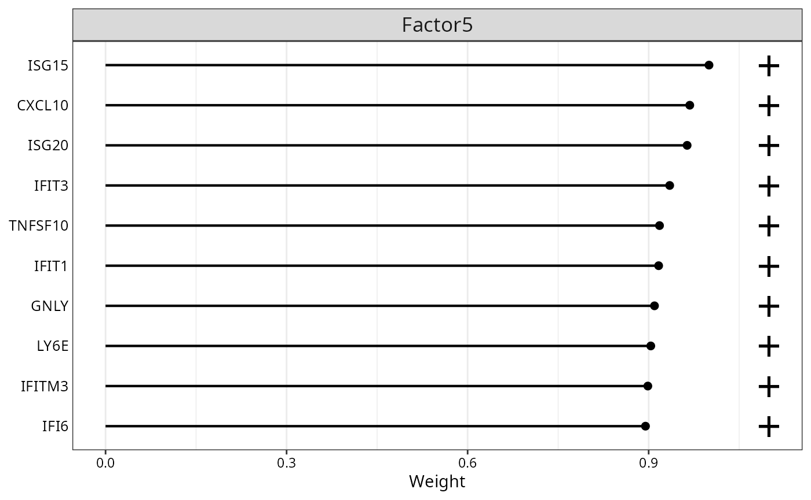
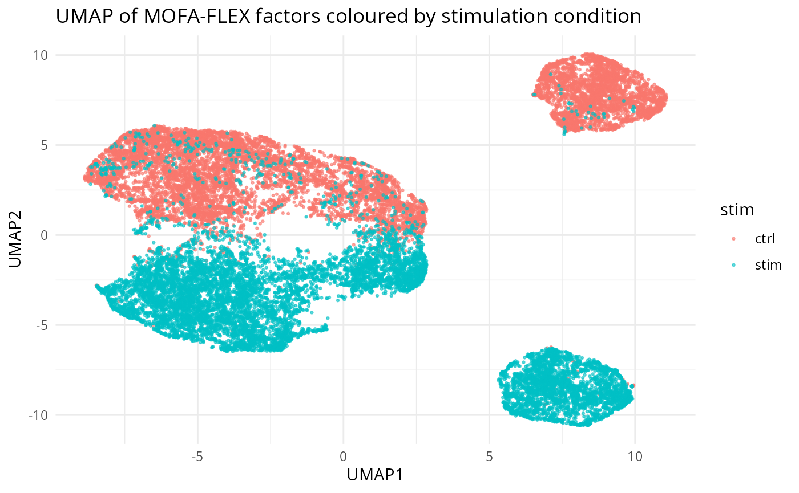

Kang IFN-β PBMC: MOFA-FLEX from R to MOFA2
Maximilian Nuber
2026-03-05
kang-analysis.RmdOverview
This vignette demonstrates an end-to-end MOFA-FLEX workflow entirely in R:
-
Load the Kang et al. (2018) PBMC IFN-β stimulation
dataset from
muscData. - Preprocess with standard Bioconductor tools (scran / scuttle).
-
Bridge the resulting
SingleCellExperimentinto a PythonAnnDataviasce_to_reticulate_anndata(). -
Train a MOFA-FLEX model with
fit_mofaflex(), saving the model to an HDF5 file compatible with MOFA2. - Load the saved model in the MOFA2 R package for downstream analysis.
Required packages
# Bioconductor
library(muscData) # BiocManager::install("muscData")
library(scuttle) # BiocManager::install("scuttle")
library(scran) # BiocManager::install("scran")
library(SingleCellExperiment)
# MofaflexR (this package)
library(MofaflexR)
# Downstream — MOFA2
library(MOFA2) # BiocManager::install("MOFA2")Load data
muscData::Kang18_8vs8() provides 29,065 PBMCs from eight
donors, each split into a control and an IFN-β–stimulated condition (8 ×
2 = 16 samples).
sce_full <- Kang18_8vs8()
#> see ?muscData and browseVignettes('muscData') for documentation
#> loading from cache
sce_full
#> class: SingleCellExperiment
#> dim: 35635 29065
#> metadata(0):
#> assays(1): counts
#> rownames(35635): MIR1302-10 FAM138A ... MT-ND6 MT-CYB
#> rowData names(2): ENSEMBL SYMBOL
#> colnames(29065): AAACATACAATGCC-1 AAACATACATTTCC-1 ... TTTGCATGGTTTGG-1
#> TTTGCATGTCTTAC-1
#> colData names(5): ind stim cluster cell multiplets
#> reducedDimNames(1): TSNE
#> mainExpName: NULL
#> altExpNames(0):# class: SingleCellExperiment
# dim: 35,635 genes × 29,065 cells
# colData names: ind, stim, cluster, cell, multipletsPreprocess
Quality-control filtering
Remove multiplets and low-quality cells before normalisation.
## Remove multiplets and cells without an assigned cell type
sce <- sce_full[, sce_full$multiplets == "singlet" & !is.na(sce_full$cell)]
## Keep cells with ≥ 200 detected genes
qc <- scuttle::perCellQCMetrics(sce)
sce <- sce[, qc$detected >= 200]
cat(sprintf("After QC: %d genes × %d cells\n", nrow(sce), ncol(sce)))
#> After QC: 35635 genes × 24562 cellsNormalisation
Log-normalise using pooling-based size factors from scran.
set.seed(42)
# clusters <- scran::quickCluster(sce)
# sce <- scran::computeSumFactors(sce, clusters = clusters)
sce <- scuttle::logNormCounts(sce)
assayNames(sce) # should include "logcounts"
#> [1] "counts" "logcounts"Select highly variable genes
Retain the 3,000 most variable genes to keep the model tractable.
dec <- scran::modelGeneVar(sce)
hvgs <- scran::getTopHVGs(dec, n = 3000)
sce_hvg <- sce[hvgs, ]
cat(sprintf("Using %d HVGs from %d cells.\n", nrow(sce_hvg), ncol(sce_hvg)))
#> Using 3000 HVGs from 24562 cells.Convert to AnnData
sce_to_reticulate_anndata() builds a Python
AnnData from the SCE without copying the underlying sparse
matrix (zero-copy bridge). All colData columns are
forwarded to adata.obs.
adata <- sce_to_reticulate_anndata(
sce_hvg,
assay = "logcounts"
)
adata
#> ReticulateAnnData object with n_obs × n_vars = 24562 × 3000
#> obs: 'ind', 'stim', 'cluster', 'cell', 'multiplets', 'sizeFactor'
#> var: 'ENSEMBL', 'SYMBOL'The stim column in adata$obs
("ctrl" / "stim") will be used by MOFA-FLEX to
split cells into two groups.
Train a MOFA-FLEX model
Key choices:
-
group_by = "stim"— split cells into ctrl and stim groups using thestimcolumn inobs. -
subset_var = NULL— HVGs were already selected; skip thehighly_variablefilter. -
save_path— write the trained model to an HDF5 file. -
mofa_compat = "full"— save in MOFA2-readable format. - View name will be
rna(automatic when wrapping a single AnnData).
## Output path — adjust to a stable directory in your project
output_dir <- file.path("results", "mofaflex")
dir.create(output_dir, recursive = TRUE, showWarnings = FALSE)
model_path <- file.path(output_dir, "kang_mofaflex.hdf5")
model <- fit_mofaflex(
data = adata,
data_options = list(
# group_by = "stim",
scale_per_group = TRUE,
subset_var = NULL,
plot_data_overview = FALSE
),
model_options = list(
n_factors = 5L,
weight_prior = "Horseshoe"
),
training_options = list(
max_epochs = 5000L,
early_stopper_patience = 50L,
seed = 42L,
device = "cuda", # or "cpu" if no GPU is available
save_path = model_path
),
mofa_compat = "full" # write a MOFA2-readable HDF5 file
)Compute time. On a modern CPU this typically converges in a few minutes thanks to early stopping.
Load the model in MOFA2
Because the model was saved with mofa_compat = "full",
the HDF5 file contains all MOFA2-compatible weight and factor matrices.
Use the load_mofaflex_model() wrapper (which handles minor
HDF5-format differences between mofaflex and MOFA2
automatically) to load it.
mofa <- load_mofaflex_model(model_path)
#> Warning in .quality_control(object, verbose = verbose): The model contains highly correlated factors (see `plot_factor_cor(MOFAobject)`).
#> We recommend that you train the model with less factors and that you let it train for a longer time.
## Attach sample metadata so colour_by aesthetics work.
## MOFA2 requires a 'sample' column matching the model's cell IDs.
cells_per_group <- MOFA2::samples_names(mofa)
meta <- do.call(rbind, lapply(names(cells_per_group), function(grp) {
cells <- cells_per_group[[grp]]
sdf <- as.data.frame(SummarizedExperiment::colData(sce_hvg)[cells, , drop = FALSE])
data.frame(
sample = cells, group = grp, sdf,
check.names = FALSE, stringsAsFactors = FALSE
)
}))
MOFA2::samples_metadata(mofa) <- meta
mofa
#> Trained MOFA with the following characteristics:
#> Number of views: 1
#> Views names: rna
#> Number of features (per view): 3000
#> Number of groups: 1
#> Groups names: group_1
#> Number of samples (per group): 24562
#> Number of factors: 5Variance explained
MOFA2::plot_variance_explained(mofa, max_r2 = 0.1)
Variance explained per factor and group.
Factor scores
MOFA2::plot_factor(
mofa,
factors = 1:5,
color_by = "stim",
add_violin = FALSE,
dodge = TRUE,
add_boxplot = TRUE
)
Factor scores coloured by stimulation condition.
Top feature weights
MOFA2::plot_top_weights(
mofa,
view = "rna",
factor = 5,
nfeatures = 10
)
Top 10 feature weights for Factor 1.
factors <- MOFA2::get_factors(mofa, factors = 1:5)
df <- cbind(
factors$group_1,
as.data.frame(SummarizedExperiment::colData(sce_hvg)[rownames(factors$group_1), ])
)
umaps <- uwot::umap(factors$group_1, n_neighbors = 15, min_dist = 0.1, metric = "cosine")
df <- cbind(df, UMAP1 = umaps[, 1], UMAP2 = umaps[, 2])
ggplot2::ggplot(df, ggplot2::aes(x = UMAP1, y = UMAP2, color = stim)) +
ggplot2::geom_point(size = 0.5, alpha = 0.6) +
ggplot2::theme_minimal() +
ggplot2::labs(title = "UMAP of MOFA-FLEX factors coloured by stimulation condition")
UMAP of MOFA-FLEX factor scores coloured by stimulation condition.
Alternatively, use basilisk to run MOFAFlex in a separate Python
process. The model is saved to disk anyway and loaded with MOFA2. If
setBasiliskShared(TRUE), the Python model is loaded into
the current R session.
basilisk::setBasiliskFork(TRUE) # use forked processes for parallelism (Linux/Mac only)
basilisk::setBasiliskShared(FALSE) # share the same Python environment across processes (saves memory)
output_dir <- file.path("results", "mofaflex")
dir.create(output_dir, recursive = TRUE, showWarnings = FALSE)
model_path <- file.path(output_dir, "kang_mofaflex.hdf5")
with_mofaflex_env({
adata <- MofaflexR::sce_to_reticulate_anndata(sce_hvg, assay = "logcounts")
MofaflexR::fit_mofaflex(
data = adata,
data_options = list(scale_per_group = TRUE, subset_var = NULL, plot_data_overview = FALSE),
model_options = list(n_factors = 5L, weight_prior = "Horseshoe"),
training_options = list(max_epochs = 5000L, early_stopper_patience = 50L, seed = 42L,
device = "cuda", save_path = model_path),
mofa_compat = "modelonly"
)
return(NULL)
}, sce_hvg = sce_hvg, model_path = model_path)Session info
sessionInfo()
#> R version 4.5.2 (2025-10-31)
#> Platform: x86_64-pc-linux-gnu
#> Running under: Ubuntu 24.04.3 LTS
#>
#> Matrix products: default
#> BLAS: /usr/lib/x86_64-linux-gnu/openblas-pthread/libblas.so.3
#> LAPACK: /usr/lib/x86_64-linux-gnu/openblas-pthread/libopenblasp-r0.3.26.so; LAPACK version 3.12.0
#>
#> locale:
#> [1] LC_CTYPE=en_US.UTF-8 LC_NUMERIC=C
#> [3] LC_TIME=de_DE.UTF-8 LC_COLLATE=en_US.UTF-8
#> [5] LC_MONETARY=de_DE.UTF-8 LC_MESSAGES=en_US.UTF-8
#> [7] LC_PAPER=de_DE.UTF-8 LC_NAME=C
#> [9] LC_ADDRESS=C LC_TELEPHONE=C
#> [11] LC_MEASUREMENT=de_DE.UTF-8 LC_IDENTIFICATION=C
#>
#> time zone: Europe/Berlin
#> tzcode source: system (glibc)
#>
#> attached base packages:
#> [1] stats4 stats graphics grDevices utils datasets methods
#> [8] base
#>
#> other attached packages:
#> [1] MOFA2_1.20.2 MofaflexR_0.0.1
#> [3] scran_1.38.1 scuttle_1.20.0
#> [5] muscData_1.24.0 SingleCellExperiment_1.32.0
#> [7] SummarizedExperiment_1.40.0 Biobase_2.70.0
#> [9] GenomicRanges_1.62.1 Seqinfo_1.0.0
#> [11] IRanges_2.44.0 S4Vectors_0.48.0
#> [13] MatrixGenerics_1.22.0 matrixStats_1.5.0
#> [15] ExperimentHub_3.0.0 AnnotationHub_4.0.0
#> [17] BiocFileCache_3.0.0 dbplyr_2.5.2
#> [19] BiocGenerics_0.56.0 generics_0.1.4
#> [21] BiocStyle_2.38.0
#>
#> loaded via a namespace (and not attached):
#> [1] RColorBrewer_1.1-3 jsonlite_2.0.0 magrittr_2.0.4
#> [4] farver_2.1.2 corrplot_0.95 rmarkdown_2.30
#> [7] fs_1.6.6 ragg_1.5.0 vctrs_0.7.1
#> [10] memoise_2.0.1 htmltools_0.5.9 S4Arrays_1.10.1
#> [13] forcats_1.0.1 curl_7.0.0 BiocNeighbors_2.4.0
#> [16] Rhdf5lib_1.32.0 SparseArray_1.10.8 rhdf5_2.54.1
#> [19] sass_0.4.10 bslib_0.10.0 htmlwidgets_1.6.4
#> [22] basilisk_1.22.0 desc_1.4.3 plyr_1.8.9
#> [25] httr2_1.2.2 cachem_1.1.0 igraph_2.2.2
#> [28] lifecycle_1.0.5 pkgconfig_2.0.3 anndataR_1.0.2
#> [31] rsvd_1.0.5 Matrix_1.7-4 R6_2.6.1
#> [34] fastmap_1.2.0 digest_0.6.39 AnnotationDbi_1.72.0
#> [37] RSpectra_0.16-2 dqrng_0.4.1 irlba_2.3.7
#> [40] textshaping_1.0.4 RSQLite_2.4.6 beachmat_2.26.0
#> [43] labeling_0.4.3 filelock_1.0.3 httr_1.4.8
#> [46] abind_1.4-8 compiler_4.5.2 withr_3.0.2
#> [49] bit64_4.6.0-1 S7_0.2.1 BiocParallel_1.44.0
#> [52] DBI_1.3.0 HDF5Array_1.38.0 rappdirs_0.3.4
#> [55] DelayedArray_0.36.0 bluster_1.20.0 tools_4.5.2
#> [58] otel_0.2.0 glue_1.8.0 h5mread_1.2.1
#> [61] rhdf5filters_1.22.0 grid_4.5.2 Rtsne_0.17
#> [64] cluster_2.1.8.1 reshape2_1.4.5 gtable_0.3.6
#> [67] tidyr_1.3.2 BiocSingular_1.26.1 ScaledMatrix_1.18.0
#> [70] metapod_1.18.0 XVector_0.50.0 RcppAnnoy_0.0.23
#> [73] ggrepel_0.9.7 BiocVersion_3.22.0 pillar_1.11.1
#> [76] stringr_1.6.0 limma_3.66.0 dplyr_1.2.0
#> [79] lattice_0.22-7 bit_4.6.0 tidyselect_1.2.1
#> [82] locfit_1.5-9.12 Biostrings_2.78.0 knitr_1.51
#> [85] bookdown_0.46 edgeR_4.8.2 xfun_0.56
#> [88] statmod_1.5.1 pheatmap_1.0.13 stringi_1.8.7
#> [91] yaml_2.3.12 evaluate_1.0.5 codetools_0.2-20
#> [94] tibble_3.3.1 BiocManager_1.30.27 cli_3.6.5
#> [97] uwot_0.2.4 reticulate_1.45.0 systemfonts_1.3.1
#> [100] jquerylib_0.1.4 Rcpp_1.1.1 dir.expiry_1.18.0
#> [103] png_0.1-8 parallel_4.5.2 pkgdown_2.2.0
#> [106] ggplot2_4.0.2 blob_1.3.0 scales_1.4.0
#> [109] purrr_1.2.1 crayon_1.5.3 rlang_1.1.7
#> [112] cowplot_1.2.0 KEGGREST_1.50.0